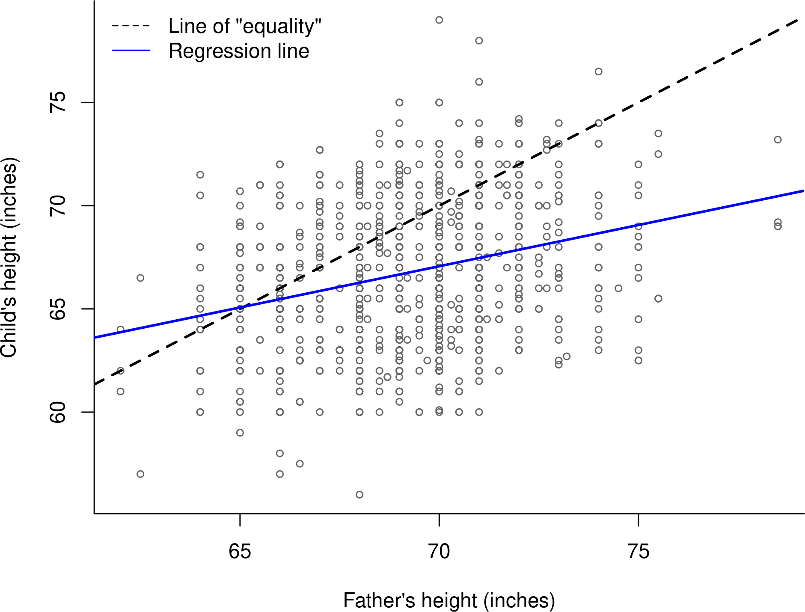
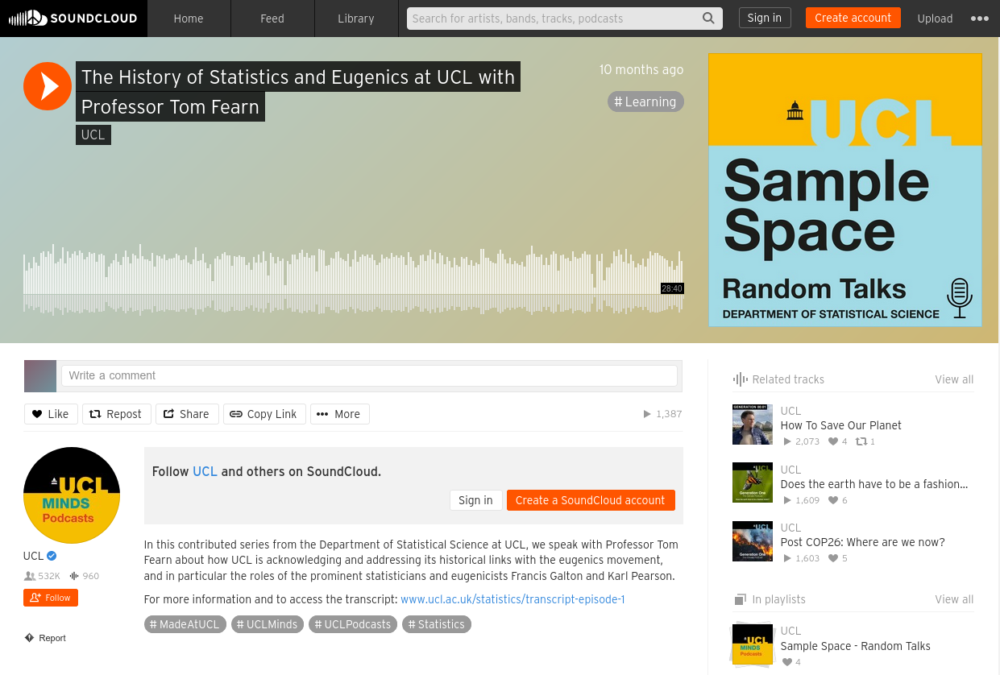
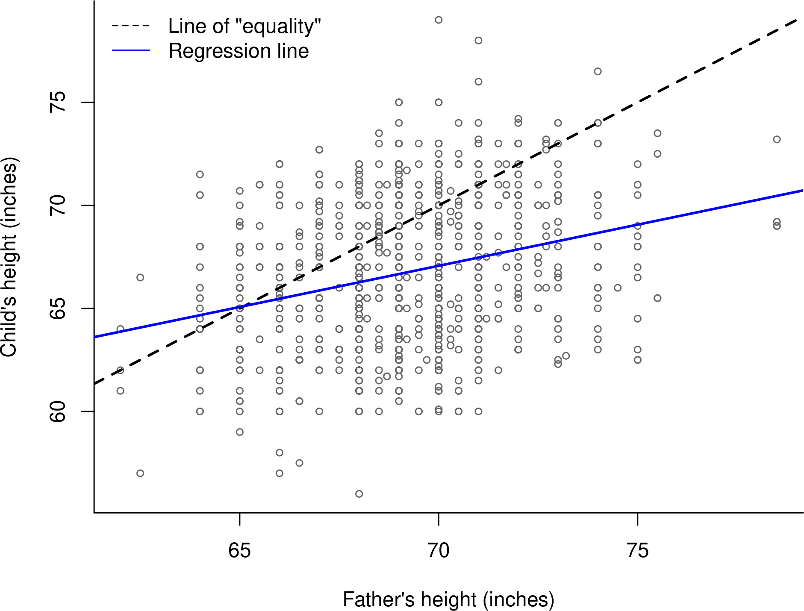

Gianluca Baio
Department of Statistical Science | University College London
g.baio@ucl.ac.uk
https://gianluca.statistica.it
https://egon.stats.ucl.ac.uk/research/statistics-health-economics
https://github.com/giabaio
https://github.com/StatisticsHealthEconomics
@gianlubaio
Undergraduates Induction week, UCL
25 September 2023
Check out our departmental podcast “Random Talks” on Soundcloud!
Follow our departmental social media accounts
UCL is a part of the University of London
A multidisciplinary university in its own right
Founded in 1826
The first English university to admit Jewish, Catholic and non-conformist faith, women, …
First ever Department of Statistics in the world; founded in 1911
Its first head was Karl Pearson
Now one of the largest in the UK
Wide variety of statistical research
90% of research outputs submitted in the “Research Excellence Framework” (REF; 2021) ranked as “internationally excellent”

Check this out on our podcast
We were founded in 1911 by Karl Pearson as the Department of Applied Statistics — we were the first university department of Statistics in the world
Pearson and his collaborators/successors laid the foundations of 20th century statistics, with ideas like correlation, regression, and p-values that are common currency today
BUT: There’s a darker side to this history and this too deserves to be told!
Among many other topics, Galton worked to study hereditary traits. In particular, he collected data on \(n=898\) children from 197 families.
The data comprise the height of each child \(y_i\), as well as the height of the father \(X_{1i}\) and the mother \(X_{2i}\), for \(i=1,\ldots,n\), all measured in inches and can be visualised in the following graph (where each family is labelled by a different colour)

What Galton noted is that shorter fathers tended to be associated with slightly taller children
With his eugenist hat on, he found this rather disappointing, because it meant that the species could not be improved (e.g. by selecting only taller parents to breed)
For this reason, he gave this phenomenon the rather demeaning name “regression to mediocrity” or “to the mean”
It has taken a long time for UCL to come to terms with its dark past, but just before the pandemics, we commissioned a structured and detailed inquiry into historic and recent eugenics activity at UCL
The commission made a number of recommendations (whose implementation got delayed by Covid) &nspace; all were accepted by the then Provost of UCL
These included denaming buildings and lecture theatres around UCL, which were previously named after Galton and Pearson
As a department, we are taking this very seriously and want to include ethics and awareness of the implications of statistical modelling in policy implementations
© Gianluca Baio (UCL) | | History of the department | Induction week | 25 Sep 2023